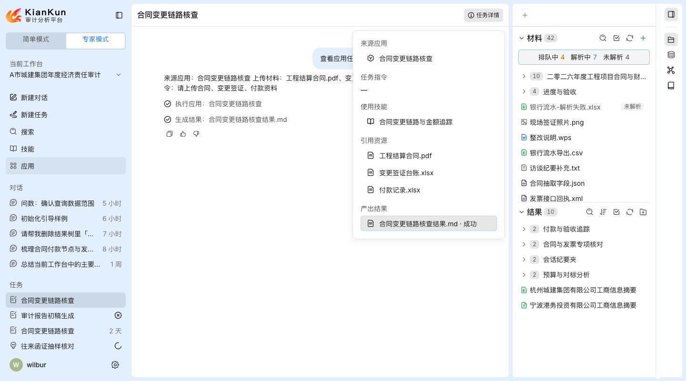
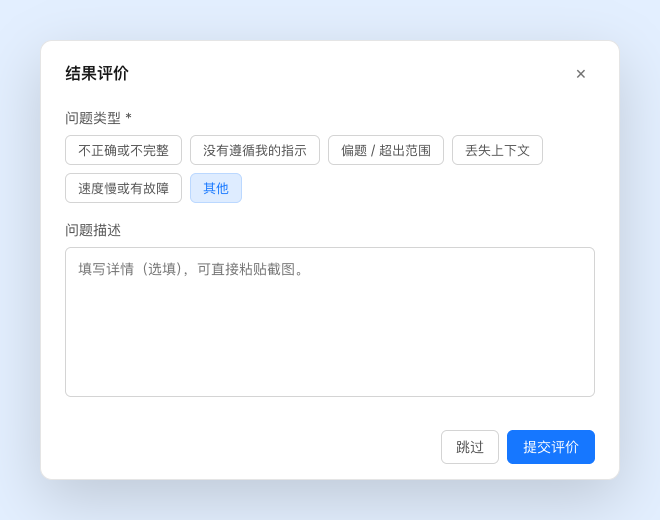
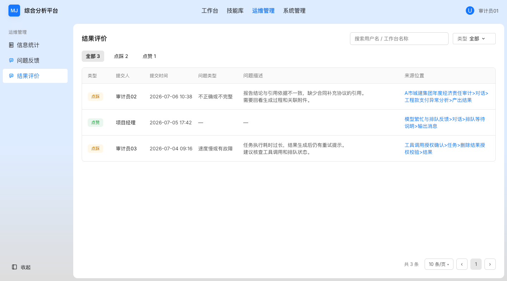
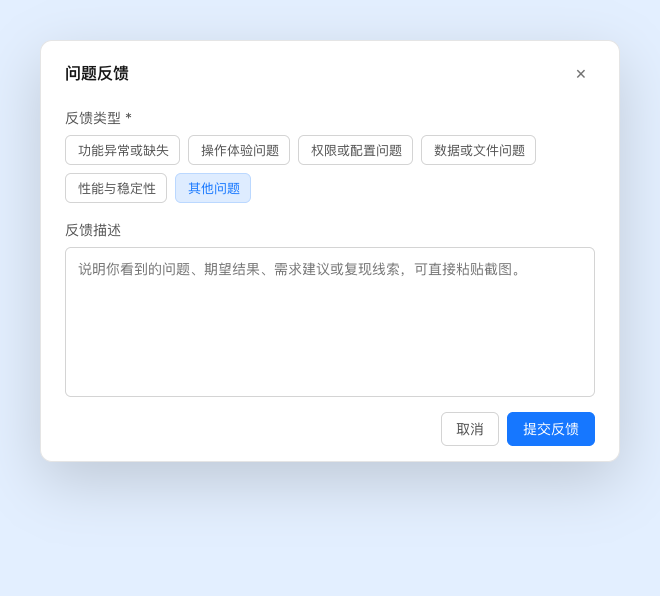
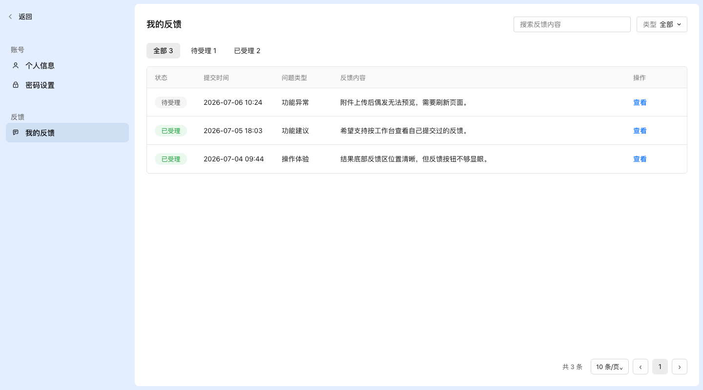
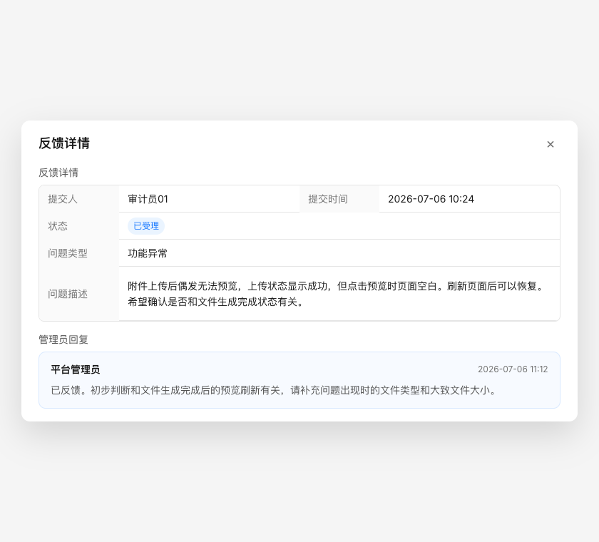
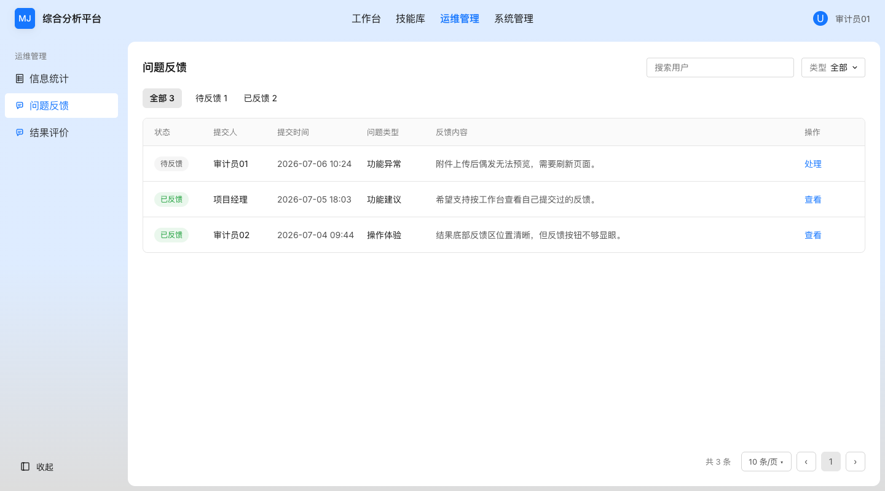
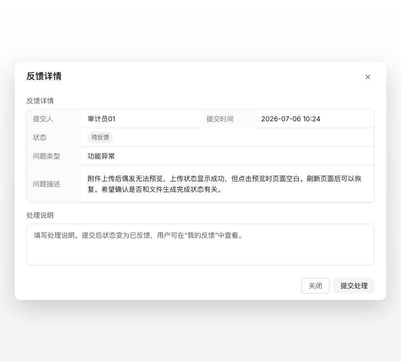

Product Requirement Document
结果评价与问题反馈
本 PRD 基于需求卡《结果评价与问题反馈》及 Paper 画布当前设计，明确“结果评价”和“问题反馈”两条业务路径：前者沉淀模型输出质量信号，后者进入可受理、可回复的问题反馈管理。
1. 摘要
核心问题
质量信号和产品反馈混在一起
点赞 / 点踩是针对模型结果的轻量质量判断；问题反馈是用户提交给管理员处理的产品问题。两者如果共用列表和状态，会让统计、定位、受理都变得混乱。
本次方案
拆成两条业务路径
结果评价进入“运维管理 / 结果评价”；问题反馈进入“运维管理 / 问题反馈”，用户在“工作台管理 / 我的反馈”查看自己的反馈。
当前边界
轻处理，不做工单系统
管理员只做待反馈 / 已反馈处理和回复，不做多轮沟通、处理人指派、SLA、催办和复杂闭环。
1.1 术语定义
| 术语 | 定义 | 本次处理方式 |
|---|---|---|
| 结果评价 | 用户对模型输出或结果内容做出的点赞 / 点踩判断。 | 独立列表统计和查看，不进入问题反馈处理流。 |
| 问题反馈 | 用户主动提交的产品级问题、需求建议、体验问题或复现线索。 | 生成反馈记录，由管理员填写处理说明，用户可查看回复。 |
| 来源位置 | 评价或反馈关联的工作台上下文路径。 | 结果评价列表中以可点击路径展示，可跳转到对应工作台上下文。 |
2. 范围与角色
用户侧
提交与自查
用户可以在结果展示底部进行点赞 / 点踩，也可以从左侧栏用户菜单提交问题反馈，并在工作台管理中查看自己的反馈状态和管理员回复。
管理侧
查看与处理
管理员通过运维管理下的“结果评价”和“问题反馈”两个菜单分别查看质量信号和可处理问题。结果评价不处理，问题反馈可处理并填写回复。
2.1 本次覆盖
| 模块 | 覆盖内容 | 不覆盖内容 |
|---|---|---|
| 结果评价 | 对话结果、任务输出、应用执行结果的点赞 / 点踩；点踩补充类型和描述；运维管理查看。 | 结果评价处理状态、结果评价转工单、评价数量对普通用户展示。 |
| 问题反馈 | 用户菜单入口、反馈弹窗、我的反馈列表与详情、管理员处理说明。 | 多轮反馈沟通、SLA、催办、站外通知、处理人指派。 |
| 导航结构 | 用户信息区、设置入口、工作台管理中的我的反馈、运维管理中的两个列表。 | 个人中心、关于、退出登录的具体页面内容。 |
3. 结果评价
结果评价用于沉淀模型输出质量信号，不进入问题反馈列表，也没有管理员处理状态。
3.1 主业务流程
对话结果
任务输出
应用执行结果
→
结果展示底部反馈区
→
点赞 / 点踩
→
保存结果评价
→
运维管理查看



3.2 用户规则
| 规则项 | 详细说明 |
|---|---|
| 展示对象 | 仅在已完成的对话结果、任务输出、应用执行结果底部展示点赞 / 点踩。生成中、排队中、失败中间态不展示评价入口。 |
| 点赞 | 点击后直接保存正向评价，不打开弹窗，不要求补充原因。 |
| 点踩 | 点击后打开“结果评价”弹窗，用户可选择问题类型并填写问题描述；点击跳过时只保存点踩评价。 |
| 问题类型 | 不正确或不完整、没有遵循我的指示、偏题 / 超出范围、丢失上下文、速度慢或有故障、其他。 |
| 附件 | 点踩弹窗不提供单独附件上传入口；描述区可直接粘贴截图作为补充材料。 |
3.3 管理列表规则
| 能力 | 规则 |
|---|---|
| 页签 | 全部、点踩、点赞，并展示统计数量。 |
| 搜索 | 支持搜索用户名和工作台名称。 |
| 筛选 | 支持按问题类型筛选。 |
| 字段 | 类型、提交人、提交时间、问题类型、问题描述、来源位置。 |
| 来源位置 | 展示为可点击路径，例如“工作台 > 对话 > 产出结果”、“工作台 > 任务 > 结果”、“工作台 > 应用 > 结果”。 |
| 处理动作 | 结果评价列表不提供处理动作，不产生受理状态。 |
4. 问题反馈
问题反馈是产品级问题和建议入口，独立于结果评价。用户提交后进入问题反馈列表，由管理员填写处理说明，用户在我的反馈中查看。
4.1 主业务流程
左侧栏用户名
→
用户菜单
→
问题反馈弹窗
→
生成反馈记录
→
用户查看 / 管理员处理




4.2 提交规则
| 规则项 | 详细说明 |
|---|---|
| 入口 | 用户点击左侧栏底部用户名，打开菜单后选择“问题反馈”。问题反馈不放在对话回答块或结果文件末尾。 |
| 反馈类型 | 功能异常或缺失、操作体验问题、权限或配置问题、数据或文件问题、性能与稳定性、其他问题。 |
| 反馈描述 | 选填，用于说明问题、期望结果、需求建议或复现线索；可直接粘贴截图。 |
| 提交结果 | 提交后生成问题反馈记录，用户可在工作台管理 / 我的反馈中查看。 |
4.3 我的反馈规则
| 能力 | 规则 |
|---|---|
| 范围 | 只展示当前用户自己提交的问题反馈。 |
| 页签 | 全部、待受理、已受理，展示统计数量。 |
| 搜索 / 筛选 | 支持搜索反馈内容，支持按问题类型筛选。 |
| 列表字段 | 状态、提交时间、问题类型、反馈内容、操作。列表不展示附件列。 |
| 详情字段 | 提交人、提交时间、状态、问题类型、问题描述、附件、管理员回复。 |
| 附件展示 | 仅在详情中展示，以可点击文件名呈现，支持多个附件。 |
5. 运维管理
系统管理侧新增一级模块“运维管理”，当前纳入信息统计、问题反馈、结果评价。结果评价用于看质量信号，问题反馈用于处理用户提交的产品级反馈。
5.1 结果评价列表
| 字段 / 操作 | 规则 |
|---|---|
| 页签 | 全部、点踩、点赞。 |
| 筛选 | 搜索用户名 / 工作台名称；按问题类型筛选。 |
| 字段 | 类型、提交人、提交时间、问题类型、问题描述、来源位置。 |
| 操作 | 无处理动作，来源位置可跳转。 |
5.2 问题反馈列表
| 字段 / 操作 | 规则 |
|---|---|
| 页签 | 全部、待反馈、已反馈。 |
| 筛选 | 只搜索用户；只支持问题类型筛选。 |
| 字段 | 状态、提交人、提交时间、问题类型、反馈内容、操作。 |
| 操作 | 待反馈为“处理”，已反馈为“查看”。 |
5.3 问题反馈处理详情

| 区域 | 内容 | 规则 |
|---|---|---|
| 反馈详情 | 提交人、提交时间、状态、问题类型、问题描述。 | 只读展示，帮助管理员判断是否受理和如何回复。 |
| 处理说明 | 管理员填写面向用户的回复。 | 提交后状态变为已反馈；用户侧可见。 |
| 底部操作 | 关闭、提交处理。 | 关闭不改变状态；提交处理写入回复并更新状态。 |
6. 数据、状态与权限
6.1 结果评价记录
| 字段 | 说明 | 必填 |
|---|---|---|
| 类型 | 点赞或点踩。 | 是 |
| 提交人 / 提交时间 | 系统记录当前用户和提交时间。 | 是 |
| 来源位置 | 工作台、对话 / 任务 / 应用、结果上下文路径。 | 是 |
| 问题类型 | 仅点踩且用户提交评价时记录。 | 否 |
| 问题描述 | 仅点踩且用户填写时记录。 | 否 |
6.2 问题反馈记录
| 字段 | 说明 | 展示位置 |
|---|---|---|
| 状态 | 用户侧为待受理 / 已受理；管理侧为待反馈 / 已反馈。 | 列表、详情 |
| 提交人 / 提交时间 | 系统记录反馈提交人和提交时间。 | 管理列表、详情 |
| 问题类型 | 用户提交时选择的反馈类型。 | 列表、详情 |
| 反馈内容 | 用户填写的问题描述。 | 列表摘要、详情全文 |
| 附件 | 截图或文件补充材料。 | 仅详情展示 |
| 管理员回复 | 管理员填写的处理说明。 | 我的反馈详情 |
6.3 权限口径
- 普通用户只能查看自己提交的问题反馈。
- 普通用户只能提交结果评价和问题反馈，不进入运维管理。
- 管理员只能在授权范围内查看结果评价和问题反馈。
- 结果评价来源位置跳转时，应遵守用户对对应工作台、对话、任务或应用结果的访问权限。
7. 验收口径
- 对话结果、任务输出、应用执行结果底部只展示点赞、点踩；不展示问题反馈入口。
- 用户点击点赞后直接保存；点击点踩后打开“结果评价”弹窗，支持提交或跳过。
- 点踩弹窗展示 6 个问题类型，不提供单独附件上传入口。
- 用户可从左侧栏用户名菜单进入“问题反馈”弹窗，并提交 6 类产品级反馈。
- 工作台管理 / 我的反馈只展示当前用户自己的反馈；列表不展示附件列，详情可查看附件和管理员回复。
- 运维管理 / 问题反馈列表不展示附件列，管理员可填写处理说明并提交。
- 运维管理 / 结果评价列表展示全部、点踩、点赞页签，来源位置可跳转到对应工作台上下文。
- 结果评价和问题反馈两条路径在管理端列表、状态、字段和处理动作上保持隔离。
7.1 不做范围
本次不做多轮反馈沟通、处理人指派、SLA、催办、站外通知、复杂工单闭环；不把点踩自动转成问题反馈；不把问题反馈或结果评价自动用于模型训练。
8. 截图索引
| 编号 | 截图 | 对应需求 |
|---|---|---|
| 01 | 01-result-feedback-entry.png | 结果展示底部反馈区、侧边栏用户信息入口。 |
| 02 | 02-result-evaluation-modal.png | 点踩结果评价弹窗。 |
| 03 | 03-issue-feedback-modal.png | 问题反馈提交弹窗。 |
| 04 | 04-my-feedback-list.png | 工作台管理 / 我的反馈列表。 |
| 05 | 05-my-feedback-detail.png | 我的反馈详情和管理员回复。 |
| 06 | 06-admin-result-evaluation-list.png | 运维管理 / 结果评价。 |
| 07 | 07-admin-issue-feedback-list.png | 运维管理 / 问题反馈。 |
| 08 | 08-admin-issue-feedback-detail.png | 管理员处理问题反馈详情。 |